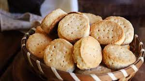

bizcochitos:
nuestros famosos bizcochitos de grasa son famosos por su exquisito sabor
y sobre todo la adicción que generan cunando pruebes uno no podrás parar.

Alfajores mardel:
nuestros Alfajores mar del plata son elaborados con una rica masa de alfajor
y rellenadas con un refinado dulce de leche para luego ser bañados por
un exquisito chocolate negro o blanco
Alfajores de maicena:
nuestros Alfajores de maicena son elaborados con una maicena de
alta calidad y rellenados con un solido duce de leche repostero
para ser pasados por coco rallado para darle ese inigualable sabor
Conitos:
nuestros conitos de dulece de leche son de lo mas empalagoso del menu,
tras poner el dulce son bañados en un chocolate de lo mas exquisito
Masitas
nuestras macitas rellenas de dulece de leche y bañadas con chocolate blanco o
negro son famosas por su variedad de formas y topping para delaitar a
cada cliente segul sus gustos
scones:
nuestros famosos scones son famosos por su exquisito sabor
y sobre todo la adicción que generan cunan pruebes uno no podrás parar.
Pepitos:
nuestras famosas Pepitos son conocidas por su exquisito sabor
y con la cantidad justa de azucar
pepas:
nuestras delicosas pepas de menblillo son lo mas rico para los amantes del
menblillo 100% asegurado pruevalas y lo entenderas.